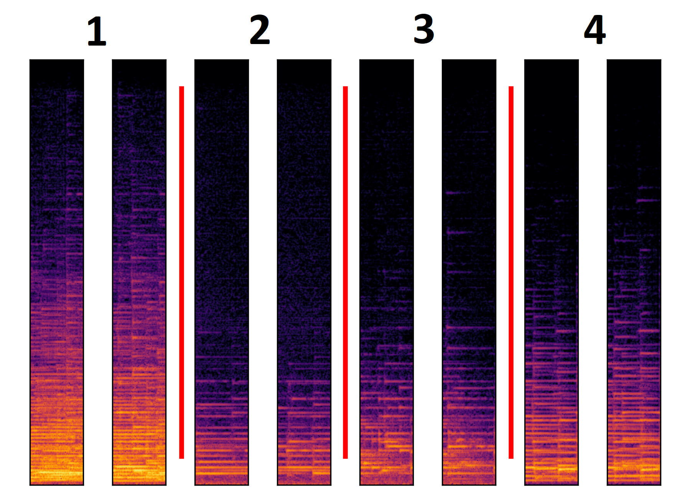

Effect of the latent variable
Music inpainting in the range between tens of milliseconds and hundreds of milliseconds is a multi-modal task with no \emph{unique} plausible solution. We designed our context encoder to be able to model this behaviour. To model the multi-modal task during training, we use a GAN architecture. To model the multi-modal task after training, we condition the generator not only on the encoded context, but also on the latent variable, a random variable drawn from a uniform distribution. We expect different realizations of the random variable to output different solutions for the task. However, this might not be the case as it has been reported that GANs with very strong conditioning information do not rely heavily on the additional noise input distribution \cite{MathieuCL15, isola2017image, MelGAN-2019}. In order to evaluate if the generator changes it's output depending on the latent variable, we generate several different outputs keeping the context fix and changing the latent variable and we evaluate the outputs.

- Gap 1A
- Gap 1B
- Gap with context 1A
- Gap with context 1B
- Gap 2A
- Gap 2B
- Gap with context 2A
- Gap with context 2B
- Gap 3A
- Gap 3B
- Gap with context 3A
- Gap with context 3B
- Gap 4A
- Gap 4B
- Gap with context 4A
- Gap with context 4B